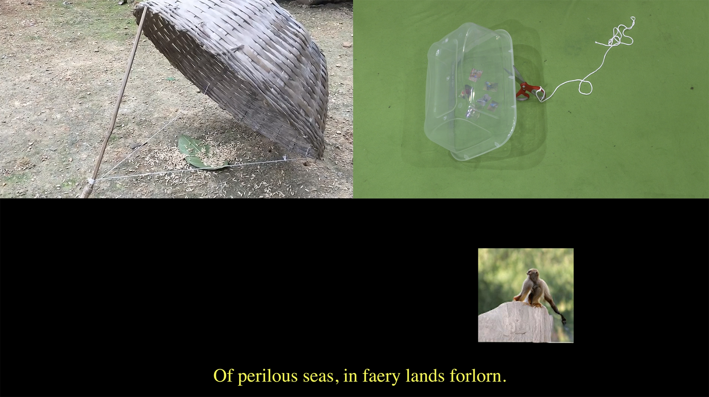

1 / 3

2 / 3

3 / 3
The Gleaners and I, a film by Agnès Varda*, book design, 176 pages, 9.91 × 13.72 cm, April, 2020. Download PDF
“The process of making films in communion with oneself, the way a painter works or a writer, need not now be solely experimental. Contrary to what people say, using the first-person in film tends to be a sign of humility: ‘All I have to ofter is myself’ ” —— Chris Marker, 1997
Little Birds Don’t Know They Live in a Technological Age*, 6 min 8 sec, single chanel video, February, 2020. Watch Full Video
Booklet design along with R.v.J.G, risograph, 13.97 × 21.59 cm, October, 2019.
After five days I arrived in the city, I went to a book store and found a postcard with Rembrandt’s self-portrait. I took it home and pasted it up on my desk wall. I often look up at him, while He is also frowning at me*.
R.v.J.G, book design, laser printing, 238 pages, 12.2 × 19 cm, October, 2019.
“A fierce generosity. I employ these words to get right to the heart of the matter. Rembrandt’s last self-portrait seems to say this: “I will be of such complicity that even savage animals will know my benevolence.” This ethic is not just a vain attempt to spruce up his soul; his work requires it, or rather brings it about. We know this because for perhaps the first time in the history of art, a painter posing before a mirror with an almost narcissistic self-satisfaction, has left us, parallel to his other work, a series of self-portraits in which we can trace the evolution of his method and the action of this evolution upon man. Is that it, or is it the opposite?” (Jean Genet, Rembrandt's Secret, 1959)
Homecoming Party, visual identity, inject printing, 8.4 × 13.95 cm, November, 2019.
Heart’s Knot( 心结 ), flip book, laser printing, 4 × 5.09 cm / 7.2 × 9.17 cm, October, 2019.
The Window, book design, laser printing, 22 × 29 cm, December, 2019. When I went to the pump house for the first time, the leaves by the window* had not fallen out. It reminded me of the book To the Lighthouse written by Virginia Woolf. In the novel, the window can be a metaphor, connecting through yesterday and tomorrow, reality and illusion, clearness and vagueness, sense and sensibility, beauty and sublime.
Simple Livin’, group show website, collaborated with Aidan Quinlan, December, 2019.
Visual identity for O+M lecture, poster: 91.44 × 121.92 cm, inject printing / flyer: 6.27 8.79 cm, risograph, November, 2019.
Visual identity for O+M lecture, vinyl on paperboard, key chain, dimension variable, February, 2020. Along with the main posters, I also made riso-printed flyers and a promotional video*.
Journey to the Loss, a si-fi story, April, 2020. (a) I can’t remember how many times of rewatching Blade Runner (1982). Every time I would fall into Rachel’s eye* and the soundtrack in the film would lead me to so many memories. “All those moments will be lost in time, like tears in rain...” The journey usually means to seek for something. However, many times, we thought we had reached the point, but didn’t know that it’s just returning to the origin —— a circle. (b) Sometimes I meet a new image, staring at it for a long time. Then after getting to know its sroty, I feel even more connected; Sometimes I am not sure if the source* of pictures should be provided. I care it too much. Sometimes I think only I know it’s enough; Sometimes I feel if people can’t get it, then it’s better to be hidden, otherwise it would be such a waste.
Birthday Gift to Qinqin, website, January, 2020.
This is a friendship website for Qinqin. One day she sent me a photo of three ducks on her way to school, I really like it and decided to use this for the idea of the website. Qinqin and I have been best friends since the first year of high school. She’s now studying Bioinformatics in The University of Edinburgh in Scotland. It’s very interesting that we both live in a place called Richmond*, even though in different countries.


Some poster designs, 2020. (a) Beethoven’s Moonlight Sonata. (b) I imagined Snape holding a magic wand. (c) Spring came, the blooming daffodils are like choirs singing songs. (d) I used my phone camera to record the waves in Prénom Carmen*(1983) by Jean-Luc Godard.
* * * * *
The Door to the Hidden, book, 20.32 × 26.67 cm, March, 2020. Download PDF “The Tao that can be spoken of is not the eternal Tao. The name that can be named is not the eternal name. The nameless is the beginning of heaven and earth. The name is the mother of the ten thousand things. Send your desires away and you will see the mystery. Be filled with desire and you will see only the manifestation. As these two come forth they differ in name. Yet at their source they are the same. This source is called a mystery. Darkness within darkness, the gateway to all mystery.” (The first chapter of Tao Te Ching)
Handmade Bags, trash materials, dimension variable, 2019—2020.
Leftovers: